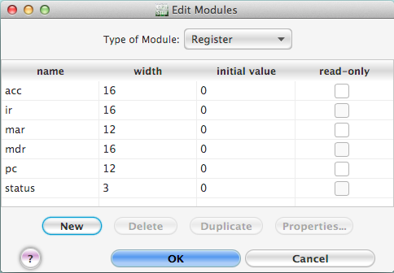

The Hardware Modules dialog (see Figure 23) has a table in which you can inspect and edit the parameters of existing modules and in which you can add new modules or delete modules.

Figure 23. The dialog for editing the hardware modules.
First choose the type of module ( Register, Register array, Condition bit, or RAM ) you wish to inspect or edit from the popup menu at the top. To delete a module, select it in the table and then click the "Delete" button. To create a new module instruction, click in the "New" button, at which point a new module will be added to the table. To duplicate a module, select the module in the table and click the "Duplicate" button. To edit an entry in the table, just click or double-click on it. Some cells are edited by typing new text in them, some cells are edited by selecting items from popup menus, and some cells are edited just by clicking in the check box in the cell. If you try to enter an illegal value in a cell (for example, if you type non-numeric values in a cell expecting a numeric value or you type in a numeric value that is out of range for that particular cell), an error message will appear when you try to save your changes.
You can edit the name and initial value of registers stored in a register array by clicking the "Properities..." button, which brings up the "Edit Register Arrays" dialog.
If you set any of the registers as read-only, then the register's initial value cannot be changed. To indicate that a register is read-only, the main display shows a lock icon to the right of the value of the register.
The columns in any of these tables can be reordered by dragging the column headers left or right to a new position. The column widths can also be adjusted by dragging the line dividing the column headers. The rows can be resorted by column by clicking in any column header.
The names of the modules can contain any characters. It is strongly recommended, but not required, that all modules have unique names regardless of the type.